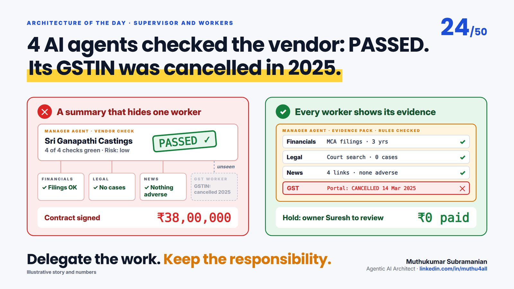
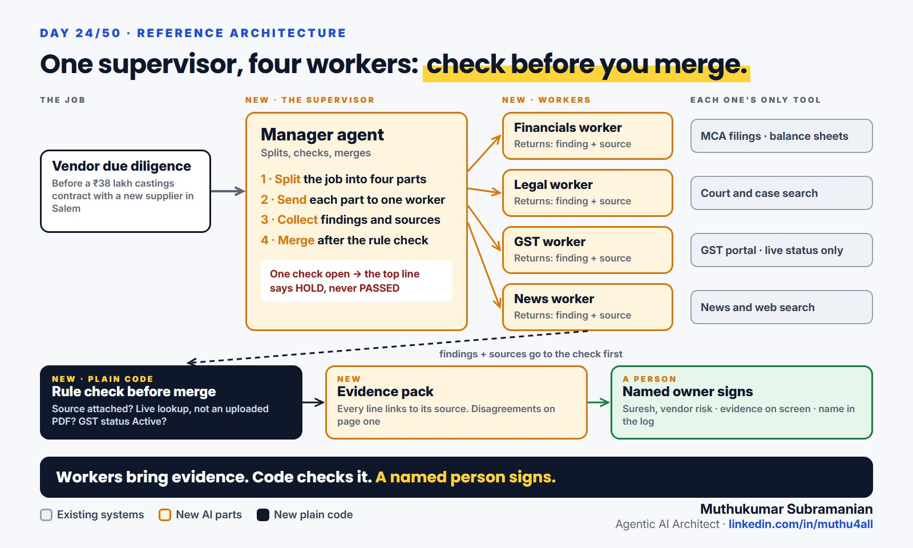
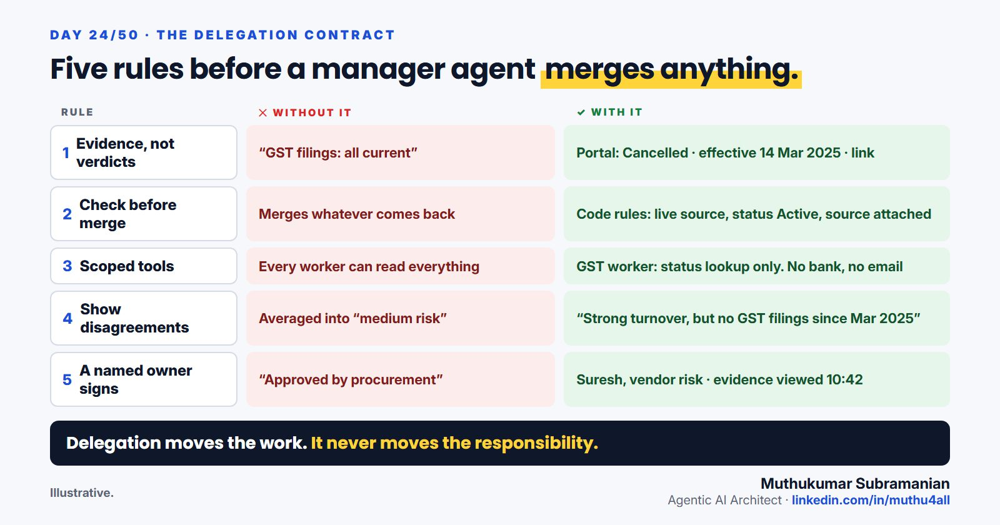

Your Manager AI Agent Delegated the Job. The ₹38 Lakh Mistake Is Still Yours.
By Muthukumar Subramanian · Agentic AI Architect

The summary looked perfect: one page, four green ticks, and a bold line at the top. "Vendor check: PASSED. Risk: low."
Arvind runs purchasing at an auto-parts maker in Hosur. He read that page on his phone between two meetings and signed a ₹38 lakh castings contract with a new supplier in Salem. Eleven weeks later his accountant asked why none of the supplier's invoices were showing up in GSTR-2B. The answer: the supplier's GSTIN had been cancelled in March 2025. About ₹6.8 lakh of input tax credit was suddenly in doubt. (The company, the people and every number here are illustrative.)
Nobody lied. Four AI agents did the check. One read the GST certificate the vendor had uploaded and wrote "GST filings: all current". The manager agent merged four answers into one confident page, and the cancelled GSTIN never reached a human screen.
Delegation moves the work. It never moves the responsibility.
On Day 8, two agents disagreed on a refund and we asked who was responsible. Today's agents agreed with each other, which is worse, because agreement looks like proof.
The architecture today
Supervisor and workers is the most common way to build a team of agents. A lead agent, the supervisor, takes a big job and splits it up:
→ It reads the job: "due diligence on Sri Ganapathi Castings before we sign".
→ It hands the parts to specialist workers for financials, legal and MCA filings, GST compliance, and news.
→ Each worker runs with its own instructions and tools, often in parallel.
→ The supervisor merges the results into one answer for a human.
Anthropic called its 2025 research feature an "orchestrator-worker" pattern. CrewAI calls it a hierarchical process, and OpenAI's Agents SDK calls it agents as tools. It's the same shape every time.

The weak spot is the merge. A smooth summary is exactly where one wrong worker disappears.
Where AI plugs in now: make the workers show their work
Don't add agents first. Write a contract between the supervisor and its workers:
- Evidence, not verdicts. Every worker returns what it found and where: the GST portal record with its status and date, the MCA filing, the news link. "All current" with no source isn't an answer.
- Check before you merge. The supervisor runs plain-code rules on the worker outputs before it writes a word. GST status must come from a live portal lookup, not an uploaded PDF, and it must say Active. If evidence is missing, that section stays open. It doesn't pass.
- Scoped tools for each worker. The GST worker can look up GST status. It can't read the bank account or email the vendor.
- Show disagreements. If the financials worker reports strong turnover and the GST worker finds no filings since March 2025, that conflict goes on page one. It doesn't get averaged into "medium risk".
- A named owner signs. The sign-off says Suresh, the vendor-risk lead, not "procurement". He sees the evidence on screen and his name goes in the log.
A supervisor without checks is just a very confident summariser.

Where it's heading with agents
In two or three years, I expect the team of agents to be the product: agent teams for due diligence, board packs, tenders and audits. The questions will sound like HR. Who's on the team? What can each one touch? Who reviews their work, and who signs?
That's already creating a new job. Some people call it the AI Agent Manager: someone who manages a team of agents the way a team lead manages people. They set each agent's scope, review its mistakes, and decide when it needs new instructions or should be retired. The title is still settling, but the work is real.
Watch it work
The same four workers and the same wrong answer, run twice: once without a check and once with one.
👉 [GIF: A-day24-4-in-article-supervisor-check.gif]
Caption: Without a check, the GST worker's "all current" merges into PASSED. With one, the live lookup says Cancelled and Suresh gets the evidence before anyone signs. All figures illustrative.
Pros
→ A week of checking becomes an afternoon, with each specialist doing what it's good at
→ Each worker is small, so you can test, swap or improve one without touching the rest
→ Four checks run at once, not one after another
Cons
→ Cost: Anthropic reported that its multi-agent research system used about 15 times the tokens of a normal chat
→ The merge hides things. Every extra worker is another place for one quiet error
→ Debugging is harder: which worker, which tool, which step?
The hard part
Getting people to read the evidence. Arvind will still read only the one-line summary between two meetings, so the top line has to carry the red flags. If one check is still open, it can't say PASSED. It says HOLD and names the person holding it.
Knowing which sources count is hard too. The GST worker didn't hallucinate. It answered "is this certificate genuine?" when the real question was "is this registration active today?" Gaps like that are found by a forward deployed engineer (FDE): an engineer who works inside the customer's team and ships on their real systems. The FDE learns that vendors upload old certificates and turns that into a rule.
And be honest about the law. Whether the credit is lost depends on dates and facts; courts have treated a cancellation before the invoice differently from a retrospective one. Your CA decides. The agent's job is to make sure your CA sees it before you sign.
The opportunity
Every company buys due diligence, research and reporting: vendor onboarding, distributor credit checks, month-end board packs, tender scrutiny. Most of it is still done by juniors with twelve browser tabs open.
That's the market: multi-agent teams sold with evidence trails. Don't sell "an AI that says PASSED". Sell a pack where every line links to its source and every sign-off has a name. Price it per vendor checked or per board pack, say ₹1,500 a vendor (illustrative), and sell the evidence trail to the auditor as much as to the buyer. FDEs build it with the first few customers. AI Agent Managers run it after that.
Tools to try
CrewAI's hierarchical process with a manager agent · Microsoft Agent Framework, which reached 1.0 in April 2026 as the successor to AutoGen and Semantic Kernel · LangGraph, with the supervisor built as a tool-calling agent · OpenAI Agents SDK, using agents as tools · and the GST portal's free Search Taxpayer page, which your GST worker should check directly.
Your turn 👇
When a manager agent misses a mistake, who owns it: the builder or the signer? One word.
Tag the person in your team who always reads the annexure, not just the summary.
Day 24 of 50 · follow along. Tomorrow: Day 25 · Five AI Agents Held a Meeting. It Cost ₹40,000 and Decided Nothing.